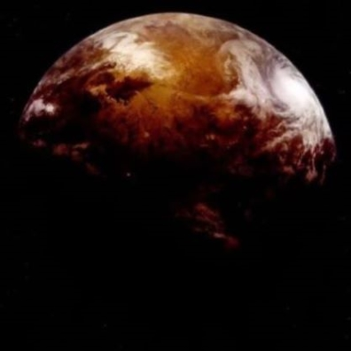

Opis: Planeta Dorin, ojczyzna Kel Dorów, takich jak Plo Koon, jest otoczona niezwykłym fenomenem kosmicznym – Pierścieniami Dorin. Są to gigantyczne pasy wirów gazowych i anomalii czasoprzestrzennych, które chronią planetę przed większością podróżników kosmicznych. Aby dostać się na Dorin, potrzeba zaawansowanych technologii i nawigacyjnych umiejętności.
Pierścienie są nie tylko piękne, ale również stanowią zagrożenie, z powodu gwałtownych burz gazowych i fluktuacji grawitacyjnych. Kel Dorowie nauczyli się żyć w harmonii z tym środowiskiem, co uczyniło ich kulturę unikalną i odporną na trudności.
Znaczenie: Pierścienie Dorin to przypomnienie o potędze natury i zdolności cywilizacji do adaptacji.
 ➡